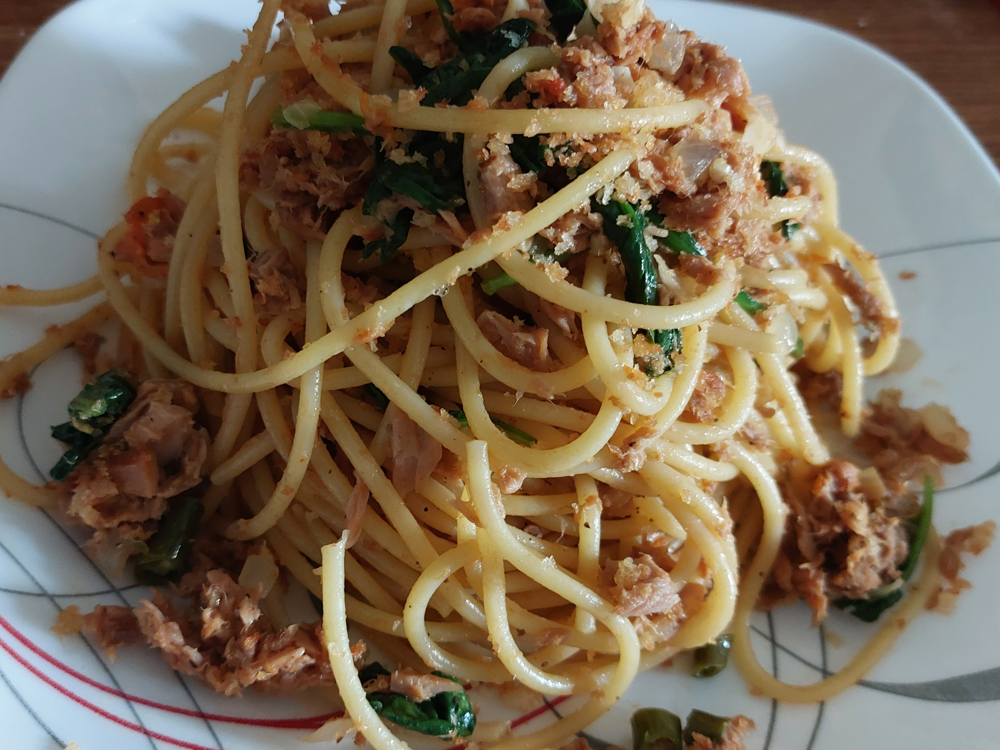

Spicy Tuna Pasta
Description
A vibrant and hearty pasta dish with the spicy kick of chili and the rich flavors of tuna. This dish is packed with protein, healthy omega-3 oils, and a delicious crunch from crispy garlic breadcrumbs. It's simple, flavorful, and ready in under 15 minutes—perfect for a quick and satisfying meal.
Ingredients
- For the Crispy Topping:
- 2 tablespoons olive oil
- 2 cloves garlic, minced
- 1/2 cup breadcrumbs
- 1 can (about 150g) tuna in olive oil or brine (drained and flaked)
- 1 tablespoon olive oil (use oil from the tuna if you prefer)
- 2-4 fresh chili, finely chopped (adjust to spice preference)
- 2 cloves garlic, minced
- 200g spaghetti (or your choice of pasta)
- 1 cup spinach (fresh or frozen)
- A handful of dried oregano or parsley
- 1 teaspoon Italian seasoning (optional)
- Salt and pepper, to taste
Steps
- Prepare the Crispy Topping:
- Heat 2 tablespoons of olive oil in a frying pan over medium heat.
- Add the chopped garlic and cook until fragrant, about 30 seconds.
- Stir in the breadcrumbs and cook, tossing occasionally, until the breadcrumbs are golden and crispy, around 3-4 minutes.
- Season with a pinch of salt, then drain the breadcrumbs on a paper towel to remove excess oil. Set aside.
- Cook the Pasta:
- Bring a large pot of salted water to a boil. Cook the spaghetti according to package instructions, until al dente.
- Drain the pasta, reserving a bit of pasta water for later.
- Make the Tuna Sauce:
- While the pasta is cooking, heat 1 tablespoon of olive oil (or use oil from the tuna) in a large frying pan over medium heat.
- Add the chopped chili and garlic, sautéing until soft and fragrant, about 2 minutes.
- Add the flaked tuna and stir to combine. Cook for another 3-4 minutes, breaking up the tuna into smaller chunks as it cooks.
- Combine the Pasta and Sauce:
- Once the tuna is heated through, add the cooked spaghetti to the pan.
- Toss to combine, adding a splash of pasta water to help the sauce coat the pasta evenly. Season with salt and pepper to taste.
- Stir in the chopped spinach and parsley, cooking for another minute until the spinach wilts and the parsley is evenly distributed.
- Serve
- Plate the pasta, topping with the crispy garlic breadcrumbs for an added crunch.
- Garnish with a little extra parsley, if desired.
It's quick, flavorful, and perfect for a weeknight meal! Enjoy!